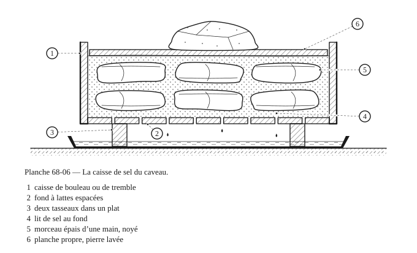

La salaison à sec tire l’eau d’une pièce de viande entière par contact direct avec du sel sec, ce qui la garde d’abord quelques semaines au froid, puis, si le séchage se poursuit jusqu’à une activité de l’eau inférieure ou égale à 0,85, plusieurs mois sans froid du tout.
Le bon choix. Une pièce entière de gros gibier — orignal (Alces americanus) en priorité — qui arrive sur la table de débitage quand il n’y a plus de place au congélateur, ou plus de courant pour le faire tourner. Une pièce de porc élevé au chalet (ch. 101), qui est la seule viande du territoire faite pour ça. Une saison froide : la salaison à sec demande une pièce maintenue entre 1,7 °C et 7,3 °C pendant des semaines, ce qui, sur la Côte-Nord, est gratuit de novembre à avril et impossible en juillet sans électricité. Un lecteur qui a le temps devant lui : le barème le plus court demande 40 jours de salaison avant même de commencer à sécher.
Au chalet, et pas à la maison. Le réfrigérateur de la maison ne prend pas un quartier et ne descend pas sous 3 °C (§8) : la maison passe une panne de trois jours, elle ne commence pas une salaison de quarante. Une viande du village qu’il faut sortir du congélateur tout de suite se cuit ou se met en pot (ch. 78) ; elle ne se sale que si elle monte au chalet.
Le mauvais choix. Toute pièce qui n’a pas atteint 7 °C dans les 24 premières heures après l’abattage : le sel ne rattrape pas une viande qui a déjà travaillé, il conserve l’état dans lequel il la trouve. La viande hachée, qui n’a plus ni surface ni centre et dont tout l’intérieur a été ensemencé par l’extérieur — elle va au ch. 69, au ch. 71 ou au congélateur. Une chambre qui dépasse 15,6 °C pendant que la pièce est encore humide.
Les espèces, une par une. Ce tableau ferme des portes.
| Espèce | Salaison à sec | Pourquoi |
|---|---|---|
| Orignal (Alces americanus), caribou (Rangifer tarandus) | Ouvert. Le sujet du chapitre | Pièces entières, gros muscles, pas de parasite connu qui résiste au sel |
| Porc élevé au chalet (ch. 101) | Ouvert, avec le barème de la §5, qui a été écrit pour lui | Voir §5 |
| Ours noir (Ursus americanus) | FERMÉ, sauf sur une viande déjà cuite à 74 °C | Trichinella. « La salaison, le séchage, le fumage […] n’exterminent pas toujours les larves infectieuses ». Cohérent avec le ch. 52 |
| Phoque du Groenland (Pagophilus groenlandicus), phoque commun (Phoca vitulina) | FERMÉ, même règle | Même parasite, même mécanisme. Voir ch. 56 |
| Castor (Castor canadensis), lièvre d’Amérique (Lepus americanus), gélinotte huppée (Bonasa umbellus) | Hors sujet. Pièces trop petites et trop maigres | Le rapport surface-volume rend la pièce sèche et immangeable avant d’être stabilisée. Ces bêtes vont au ch. 71 et au ch. 78 |
| Foie et reins de cervidés | INTERDIT, et pas à cause du sel | « Ne mangez pas le foie ni les reins de cervidés car ils peuvent contenir un taux de cadmium élevé ». Le cadmium ne sort pas au salage. Voir ch. 22 |
| Poisson, tous | Autre chapitre | Ch. 75, 76, 77 |
Ce qui n’est pas dans ce chapitre. Le choix du sel lui-même et ce qu’il y a dedans : ch. 67. Le mécanisme complet de l’altération, dont la §3 ne prend que ce qui sert au sel : ch. 66. La salaison en liquide, qui règle le problème des pièces irrégulières que la salaison à sec règle mal : ch. 69. Le fumage, qui n’est jamais un traitement de conservation à lui seul dans ce livre : ch. 70 et 71. Le débitage qui fournit les pièces : ch. 62 à 65.
Le sel sec posé sur la viande fait sortir l’eau des cellules et entre à sa place. Ce qui compte n’est pas la quantité de sel mais l’eau qui reste disponible aux bactéries, l’activité de l’eau, ou aw. Sous aw 0,85, la pièce tient sans froid ; avant, elle n’est qu’en cours de conservation, et c’est le froid qui la tient. Le sel voyage par diffusion, lentement et depuis l’extérieur : les barèmes comptent donc les jours au kilogramme, pas à la pièce.
Le nitrite, lui, ne sèche rien : il freine les microbes et leurs toxines pendant que le sel avance, et une seule des deux barrières ne fait pas le travail des deux.
Balance au gramme — balance de cuisine qui affiche le gramme et porte plus que la plus grosse pièce ; tout le chapitre est en pourcentage du poids de la viande, et sans pesée il n’y a pas de pourcentage. Une balance à ressort de chasse ne lit pas le gramme. Remplacée au besoin par : → §9 (balance à fléau tarée à l’eau).
Thermomètre à sonde — thermomètre à lecture instantanée dont on plante la tige au plus épais de la pièce ; il porte les 74 °C à cœur, la dernière barrière. Remplacé au besoin par : rien ; il ne se fabrique pas, il se vérifie (→ §9).
Thermomètre min-max — thermomètre d’ambiance qui garde la plus haute et la plus basse température atteintes depuis la dernière lecture ; lui seul dit si la chambre a passé 15,6 °C pendant la nuit, donc si la pièce se mange ou se jette. Remplacé au besoin par : un thermomètre ordinaire lu deux fois par jour, sinon → §9.
Sel sans additif — gros sel, sel à marinade ou sel de mer, sans iode ni antiagglomérant : 6 % du poids de la viande, plus une réserve pour les resalages de l’étape 11. Jamais de sel de déglaçage ni d’adoucisseur : on ne sait pas ce qu’il y a dedans. Remplacé au besoin par : sel de table non iodé, ou sel fait avec l’eau du fleuve (→ §9).
Sel de salaison nitrité — sel du commerce additionné de nitrite de sodium, pourcentage déclaré sur l’emballage ; la deuxième barrière contre les toxines, sans laquelle le plancher de 2,5 % de sel n’existe pas. Dosé selon l’emballage, jamais selon une recette. Remplacé au besoin par : rien, et le salpêtre n’en est pas un (§8) ; sans lui, → §9, avec ses pertes.
Contenant non réactif à fond qui égoutte — plastique alimentaire, acier inoxydable ou grès vernissé, percé au fond ou sur une grille : une pièce qui baigne dans sa saumure n’est plus en salaison à sec. Ni aluminium, ni fer galvanisé, ni cuivre : la saumure les attaque et ce qu’elle en tire finit dans la pièce. Remplacé au besoin par : caisse de bouleau ou de tremble à fond percé, sur deux tasseaux au-dessus d’un plat (→ §9).
Le reste : ch. 00b.
1Vérifier la porte d’entrée. La pièce vient d’une bête refroidie à 7 °C dans les 24 premières heures. Si on ne peut pas l’affirmer, c’est non : la pièce va au ch. 78 ou à la poêle, pas au sel. Le sel n’assainit pas, il arrête.
2Choisir la pièce. Muscles entiers, séparés proprement à la membrane (ch. 63, 64, 65), sans caillot, sans esquille d’os, sans plaie de balle ni tissu meurtri. Un hématome au centre d’une pièce est de l’eau, du sang et un abri contre le sel. Il se taille au couteau et il se jette (ch. 23).
3Peser, et écrire le poids. Au gramme, avant tout. Tout ce qui suit est un pourcentage de ce nombre-là. Ce poids initial est aussi ce qui permettra, des semaines plus tard, de savoir où en est le séchage : une pièce dont on a perdu le poids de départ est une pièce dont on ne saura jamais si elle est prête. Sur l’étiquette attachée à la pièce : le poids frais et la date de salage.
4Parer. Retirer les membranes sales et le gras jauni. Garder la couverture de gras propre du côté extérieur : elle protège la surface du dessèchement en croûte. Sur l’orignal, il y en aura peu — c’est une bête maigre, et c’est la limite du chapitre autant que du ch. 19.
5Calculer. 6 % du poids de la viande en sel. Sur une pièce de 3 200 g : 192 g. Le plancher absolu est 2,5 %, et il n’est jamais donné seul — toujours « avec un minimum de 100 ppm » de nitrite ou de nitrate. Sans nitrite, 2,5 % n’est pas un plancher, c’est un pari.
6Préparer le mélange. Sel, plus le sel de salaison nitrité (nitrite de sodium) dosé selon son emballage et rien d’autre. Le mélange doit rester majoritairement du sel : pour les jambons, les agents de salaison doivent avoir une teneur en sel d’au moins 70 %. Mélanger à sec, à fond, dans un bol, avant de toucher la viande. Un mélange fait sur la pièce est un mélange inégal, et un mélange inégal de nitrite est un problème des deux côtés : trop ici, pas assez là.
7Frotter. « Les tissus musculaires exposés […] devraient être recouverts d’agents de salaison ». Recouverts veut dire recouverts : pas une saupoudrée, une couche. Insister là où l’os a été retiré, dans les replis, autour de l’articulation. C’est exactement là que ça tourne.
8Disposer. Pièces à plat dans le contenant, gras vers le bas sauf la dernière, gras vers le haut. Ne pas empiler plus haut que ce qui se retourne d’une main.
9Mettre au froid, entre 2 et 4 °C. Lire le min-max deux fois par jour. Au-dessus de 15,6 °C, la salaison est terminée et la pièce est perdue — pas mise en attente, perdue.
10Égoutter. Le sel fait sortir de l’eau ; cette eau se charge de sel et devient une saumure. En salaison à sec, elle s’évacue : la pièce ne trempe pas dedans. Une pièce qui baigne n’est plus au chapitre 68, elle est au chapitre 69, et pas selon le barème du 69.
11Retourner et resaler. Le mélange de l’étape 6 se partage en trois : un tiers frotté à l’étape 7, les deux autres au 3e et au 5e jour. Chaque fois : retourner chaque pièce, remettre le sel là où il a fondu, vider le liquide. Ensuite, retourner et vider tant que la pièce est au sel, et remettre du sel partout où il manque. C’est le geste qui distingue une salaison conduite d’une pièce oubliée dans une boîte.
12Compter les jours, au kilogramme. Le barème, écrit pour les jambons :
| Ce qu’on compte | Minimum absolu | Minimum au poids |
|---|---|---|
| Contact avec les agents de salaison | 28 jours | et jamais moins de 3,3 jours par kilogramme de produit non salé |
| Durée totale de la salaison | 40 jours | et « en aucun cas » moins de 4,4 jours/kg |
Pour la pièce de 3 200 g de l’étape 5 : 3,2 × 3,3 = 11 jours de contact, donc le minimum absolu de 28 jours commande. 3,2 × 4,4 = 14 jours, donc le minimum de 40 jours commande aussi. Sur des pièces de chalet, ce sont presque toujours les minimums absolus qui gouvernent, pas le calcul au kilogramme. Le calcul reprend la main au-dessus d’environ 8,5 kg pour le contact et 9,1 kg pour le total.
13Rincer et laisser égaliser. Rincer le sel de surface à l’eau froide, éponger, remettre au froid sans sel, sous 5 °C, à couvert léger : d’un mois pour une petite pièce jusqu’à trois mois pour une pièce peu salée, le temps que le sel de la couche externe gagne le centre. La pièce y perd encore de 10 à 15 % de son poids. Une pièce qui sort de sa salaison est salée en surface et pas au centre, et la trancher à ce moment-là donne exactement l’impression trompeuse d’un produit fini.
14Suspendre. Pièce pendue, une ficelle par pièce, rien qui se touche, air qui circule des deux côtés. Sous filet ou coton à fromage si les mouches sont une possibilité — donc dès que la chambre remonte au-dessus du gel.
15Sécher au froid et lentement. Les barèmes de séchage, tous écrits pour le porc : saucissons, 15 jours minimum à 7,3 °C minimum ; capicola, 20 jours à 7,3 °C minimum ; jambons, un tableau qui va de −54,4 °C à 23,9 °C selon la durée. Une pièce qui sèche vite fait une croûte : la surface durcit, ferme le passage, et le centre reste humide derrière. C’est le défaut classique et il ne se rattrape pas.
16Peser, et peser encore. Chaque semaine, à la même balance ; le poids du jour s’écrit sur l’étiquette, sous le poids frais, à la place du précédent. La perte de masse est la seule lecture de chantier qu’un chalet puisse faire du séchage. Elle n’est pas une mesure d’activité de l’eau, et aucun pourcentage de perte ne garantit un aw de 0,85. Ce qu’on sait : un jambon sec fini a perdu au moins 18 % de son poids frais, et en dessous ce n’en est pas un ; tant que la pièce perd du poids, elle sèche encore ; quand elle arrête d’en perdre alors que la chambre n’a pas changé, elle a fini ce qu’elle pouvait faire dans ces conditions-là.
17Décider de ce qu’on a. Deux produits sortent de la même procédure, et il faut savoir lequel on tient :
| Pièce salée, encore humide | Pièce salée et séchée | |
|---|---|---|
| Critère | Salaison terminée, séchage partiel | aw ≤ 0,85 — non mesurable au chalet |
| Se garde | Au froid seulement, 2 à 4 °C | Hors froid |
| Se mange | Cuite à 74 °C à cœur | Le livre dit : cuite quand même. Voir §8 |
| Statut dans ce livre | Le cas normal au chalet | Le cas que le livre ne peut pas certifier |
18Étiqueter et ranger. Sur l’étiquette de la pièce : « À CUIRE ». Rangement au froid, au-dessus des viandes crues et jamais en dessous, dans un contenant qui laisse respirer. Une pièce salée qui n’est pas sèche ne se met pas sous vide ni dans un sac fermé : le sac crée le milieu « humide et sans oxygène » où le botulisme se développe.
19Cuire. 74 °C à cœur, thermomètre planté dans la partie la plus épaisse. Le dessalage préalable — tremper la pièce à l’eau froide, changer l’eau — est une question de goût, pas de sécurité, et il ne change rien au 74 °C.

| Moment | Ce qu’on vérifie | Cible chiffrée | Si c’est hors cible |
|---|---|---|---|
| Avant le sel | Refroidissement de la carcasse | 7 °C en 24 h | Pas de salaison. Cuisson à 74 °C ou ch. 78 |
| Étape 3 | Poids frais sur l’étiquette | Au gramme | Repeser avant de saler. Sans ce nombre, le chapitre ne fonctionne pas |
| Étape 5 | Sel pesé | 6 % du poids de la viande. Plancher 2,5 % et seulement avec nitrite | Repeser. Ne jamais estimer au volume : le sel fin et le gros sel n’ont pas la même masse au litre |
| Tous les jours, salage | Température de la chambre | 2 à 4 °C visé ; fourchette de la chambre de salaison 1,7 à 7,3 °C | Sous 1,7 °C, la diffusion s’arrête et les jours ne comptent plus : prolonger. Au-dessus de 15,6 °C : jeter |
| Jours 3 et 5, puis à chaque retournement | Liquide au fond | Contenant vidé, pièce non immergée | Vider, resaler les zones nues, retourner |
| Jour 28 | Contact avec le sel | ≥ 28 jours et ≥ 3,3 jours/kg | Poursuivre. Un barème ne s’arrondit pas vers le bas |
| Jour 40 | Salaison totale | ≥ 40 jours et ≥ 4,4 jours/kg | Poursuivre |
| Fin de salaison | Fermeté au pouce | La pièce ne cède plus comme de la viande fraîche, elle résiste sur toute l’épaisseur | Une zone molle au centre = sel non arrivé. Prolonger, ou trancher et cuire à 74 °C |
| Chaque semaine, séchage | Perte de masse | Perte qui continue, sans chute brutale | Perte arrêtée tôt = croûte. Perte trop rapide = chambre trop sèche ou trop ventilée |
| Chaque semaine, séchage | Température | ≥ 7,3 °C dans les barèmes, mais le livre garde la chambre froide, quitte à sécher plus longtemps | Ne jamais monter la chambre pour aller plus vite. Voir §8 |
| Avant de trancher | Aspect de la coupe | Couleur homogène du bord au centre | Centre plus pâle, plus mou ou plus rouge que le pourtour = salage incomplet |
| À table | Température à cœur | 74 °C | Remettre au feu. Un thermomètre, pas une couleur |
| Observation | Diagnostic | Action |
|---|---|---|
| Odeur aigre ou sûre en ouvrant le contenant, dans les premiers jours | Fermentation non voulue : sel insuffisant, ou chambre trop chaude | Jeter. Loin du bâtiment (ch. 23) |
| Surface visqueuse, gluante, qui file entre les doigts | Flore de surface installée. Le sel n’a pas pris la main | Jeter. Ce n’est pas rattrapable au lavage |
| Verdâtre ou gris-vert dans l’épaisseur, autour d’un os ou d’un hématome | Altération interne partie d’un point où le sel n’est pas arrivé | Jeter la pièce entière, pas seulement la zone |
| Bulles, gonflement, liquide qui mousse | Production de gaz | Jeter. Aucune dégustation, aucun reniflage prolongé |
| Moisissure blanche, sèche, poudreuse, en surface, pendant le séchage | Normale sur une viande salée et séchée : les jambons secs en portent d’ordinaire | Brosser à la brosse raide et à l’eau chaude, puis cuire la pièce à 74 °C, comme tout ce qui sort de ce chapitre. Sur une pièce encore molle et humide, ce n’est plus le même signe : la moisissure y descend sous la surface — jeter |
| Moisissure noire, verte, duveteuse ou qui pénètre | Contamination installée | Jeter |
| Pièce dure et sombre à l’extérieur, molle et fraîche au centre | Croûte de séchage : la surface a fermé le passage | Ne pas prolonger le séchage, ça n’entrera plus. Trancher et cuire à 74 °C, tout de suite |
| Goût rance, odeur de peinture ou de vieille huile, gras jauni | Oxydation du gras. Question de qualité, pas d’infection | Parer le gras. Si c’est traversant, la pièce n’est plus mangeable |
| Cristaux blancs en surface d’une pièce bien sèche | Sel ressorti au séchage | Aucune action. Frotter si ça dérange |
| Pièce salée oubliée dans un sac fermé, non sèche | Milieu « humide et sans oxygène » | Jeter sans ouvrir près du visage. Voir §8 |
| Rien d’anormal, mais la chambre a dépassé 15,6 °C en cours de route | Le seuil critique de S. aureus a été franchi | Jeter. L’absence de signe n’est pas une preuve — c’est justement le problème |
« Ça sent bizarre » n’est pas un diagnostic, et l’inverse non plus. Une pièce salée à sec sent le sel, la viande et un peu le moisi noble1. Le seul écart qui se lit sans hésiter, c’est l’aigre.
1Le botulisme ne se voit pas, ne se sent pas et ne se goûte pas. « Le botulisme n’altère pas la couleur, l’odeur ou le goût des aliments ». La bactérie « peut se développer dans un milieu humide et sans oxygène » — c’est la définition exacte du centre d’une pièce épaisse où le sel n’est pas encore arrivé, et d’une pièce salée non sèche rangée dans un sac fermé ou sous vide. La souche du milieu marin et fluvial, le type E, est inhibée par un entreposage sous 3 °C, un pH sous 5,0 ou une activité de l’eau sous 0,97 : un réfrigérateur réglé à 4 °C ne descend pas sous 3 °C, et une pièce encore humide n’est pas sous 0,97. Ce qui protège, ce sont le sel arrivé au centre, l’oxygène et le temps — pas l’apparence. Symptômes généralement 12 à 36 heures après le repas : vision double, paupières tombantes, difficulté à avaler, faiblesse qui descend des épaules vers le bas. Un chalet hors réseau de la Côte-Nord est à des heures d’une antitoxine. Au moindre doute sur une pièce : elle se jette. Une pièce de viande coûte moins cher qu’une évacuation.
2La salaison ne règle pas la trichinellose. Ni le sel, ni le séchage, ni le fumage, ni le congélateur. « La salaison, le séchage, le fumage ou la cuisson au four à micro-ondes n’exterminent pas toujours les larves infectieuses ». « La plupart des espèces de Trichinella qui ont été trouvées dans la nature résistent à la congélation ». Le mécanisme : la larve est enkystée dans le muscle, protégée, et ce qui tue une bactérie de surface ne l’atteint pas. Aucune salaison à sec seule n’est reconnue comme traitement d’inactivation : chaque méthode reconnue enchaîne le sel et un séchage long, ou le sel et un fumage à chaud. Conséquence, sans exception : aucune pièce d’ours noir ni de phoque ne se sale à sec pour être mangée crue. Jamais. Ces deux espèces se cuisent à 74 °C à cœur, et ce qui se sale, c’est la viande déjà cuite. Voir ch. 52 et 56.
3Le sel de salaison n’est pas du sel. Le plafond de dose de la salaison à sec est de 62 g de sel de nitrite de sodium et 186 g de sel de nitrate par 100 kg de produit de viande : à l’échelle d’une pièce de 3 kg, on parle de quelques grammes, pesés, pas d’une cuillère. Ce n’est pas un excès de goût qui guette, c’est un poison franc — le nitrite change le fer du sang en une forme qui ne fixe plus l’oxygène, et les tissus en manquent. Dans ce produit, la dose est la sécurité. Il se pèse et ne se cuillère pas, parce que le même volume de cristaux fins et de cristaux gros n’a pas la même masse. Il ne se coupe pas d’avance avec du sel ordinaire non plus : un mélange dilué à un taux qu’on ne connaît plus ne se dose plus du tout, ni vers le haut ni vers le bas. Une ingestion est une intoxication dont la gravité dépend de la dose, et le transport depuis un chalet se compte en heures : la décision de partir se prend tout de suite (ch. 2, ch. 35).
4Le salpêtre ne se dose pas comme un sel de salaison moderne. Les vieux textes disent « une poignée de salpêtre ». Le salpêtre (nitrate de potassium) est du nitrate, qui doit d’abord être réduit en nitrite par des bactéries pour agir : il agit plus lentement, et sa concentration en matière active n’a rien à voir avec celle d’un mélange du commerce. Les deux apparaissent d’ailleurs séparément dans le plafond de dose, avec des chiffres différents (62 g contre 186 g par 100 kg). Ce livre ne donne aucune quantité de salpêtre, dans aucun chapitre. La forme moderne équivalente est un sel de salaison nitrité (nitrite de sodium) du commerce, à pourcentage déclaré sur l’emballage, dosé selon cet emballage. Substituer l’un à l’autre au poids est une erreur de dose dans un produit où la dose est la sécurité.
5Une salaison tiède ne se rattrape pas. « Lorsque la température dépasse le seuil critique de 15,6 °C, la multiplication de Staphylococcus aureus et la production de toxines peuvent survenir ». Le mécanisme : ce n’est pas la bactérie qui pose problème à la fin, c’est ce qu’elle a laissé pendant que la pièce était tiède et encore humide. La toxine reste après que la bactérie est morte, et le froid revenu ne l’enlève pas. Une pièce dont la chambre a dépassé ce seuil en cours de salaison se jette, même si elle n’a rien d’anormal.
6Ni foie ni reins de cervidés, salés ou non. « Ne mangez pas le foie ni les reins de cervidés car ils peuvent contenir un taux de cadmium élevé » — jusqu’à cent fois plus de cadmium que la quantité tolérée. Le cadmium est un métal : le sel ne le retire pas, le séchage le concentre. Voir ch. 22.
Pas d’électricité, pas de sel de salaison nitrité, pas de balance, pas de thermomètre d’ambiance, personne à qui demander. La question n’est plus de faire un produit, elle est de ne pas perdre un quartier d’orignal (Alces americanus). Deux items seulement de la §4 ne se refabriquent pas ; tout le reste, oui.
Sans pesée, le chapitre n’existe plus : tout y est en pourcentage du poids de la viande. Une balance à fléau se monte en une heure avec ce qui traîne, et elle se tare à l’eau, parce que 1 mL d’eau pèse 1 g et 1 L pèse 1 kg — ce n’est pas un chiffre à valider, c’est la définition du litre.
Le fléau. Une tige droite et rigide — bois franc équarri, tube de métal — percée exactement en son milieu. La suspendre par cette perce, à un fil ou à une boucle de broche, de façon que le point d’appui soit au-dessus de la ligne des deux plateaux : un fléau dont l’appui est en dessous bascule d’un bord et ne revient jamais. Deux plateaux — couvercles de boîte de conserve, écuelles, morceaux d’écorce — pendus par trois fils chacun, à égale distance du centre. À vide, le fléau doit tenir l’horizontale ; sinon, gratter le bras lourd ou fixer un bout de broche sur le bras léger jusqu’à ce qu’il tienne. Long et léger, il lit fin ; court et massif, il ne lit rien.
La pesée par substitution, qui rend l’égalité des bras inutile. Poser la pièce de viande sur le plateau de gauche. Verser du sable, du gravier ou de la neige tassée sur celui de droite jusqu’à l’équilibre — peu importe combien, on ne le saura jamais. Retirer la viande, laisser le sable en place, puis verser de l’eau dans le même plateau de gauche, dans un contenant dont on a mesuré le vide de la même façon, jusqu’à retrouver l’équilibre. La masse d’eau versée est la masse de la viande. Comme la viande et l’eau ont occupé le même plateau au même bras, un bras plus long que l’autre ne change rien au résultat : c’est le seul montage improvisé dont la justesse ne dépend pas de la qualité de la fabrication.
Mesurer l’eau sans éprouvette. Tout contenant dont le volume est imprimé dessus — bouteille, cruche, boîte de conserve — donne une masse connue une fois rempli à ras. Une bouteille de 2 L pleine, c’est 2 kg. Pour le sel de l’étape 5, on ne pèse d’ailleurs pas du sel : on pèse l’eau qui lui fait équilibre. Les 192 g de l’exemple, ce sont 192 mL d’eau.
Une balance à fléau ne dérive pas, ne se décharge pas et ne se dérègle pas au froid, ce qui en fait l’instrument le plus fiable de la §4. Elle est seulement lente, et elle demande les deux mains.
Un thermomètre à sonde ne se fabrique pas. Il se vérifie, et un thermomètre faux vérifié vaut un thermomètre juste.
Deux points fixes, tous deux gratuits : de la glace pilée noyée d’un peu d’eau et brassée donne 0 °C ; l’eau qui bout au bord du fleuve donne 100 °C. Tremper la sonde dans la glace fondante sans toucher le fond du plat, attendre que la lecture arrête de bouger, lire l’écart. S’il lit 3 °C dans la glace fondante, il lit 3 °C de trop partout : le 74 °C se vise alors à 77 °C sur ce cadran-là, et l’écart s’écrit sur le thermomètre lui-même, au feutre ou gravé, pas dans la tête. Un cadran à aiguille se rattrape souvent tout seul — l’écrou sous la tête se tourne, sonde dans la glace, jusqu’à ce que l’aiguille revienne sur zéro.
Un thermomètre qui donne deux écarts différents aux deux points fixes n’est pas décalé, il est brisé, et rien ne le rattrape.
Un plat d’eau posé dans la chambre borne le bas : tant qu’il garde de la glace qui ne fond pas complètement dans la journée, la chambre tourne autour de 0 °C. Une chambre où l’eau reste liquide sans jamais devenir tiède au dos de la main est dans la bonne région, et c’est tout ce qu’on peut en dire.
Rien de ce qui traîne dans un chalet ne marque le 15,6 °C, et c’est pourtant le seuil qui décide entre manger et jeter. La réponse honnête n’est pas un truc, c’est un calendrier : on ne commence une salaison qu’entre le premier gel sérieux et le dégel, et dans un caveau creusé dans le sol, parce que le sol suit l’air avec du retard. Ce retard est exactement ce qui rend un caveau sûr en octobre et traître en mai — la terre est encore froide, mais les journées ne le sont plus, et c’est l’air qui entre à l’ouverture de la porte qui fait monter la caisse. Le sol retarde sur l’air d’autant plus qu’on creuse : de l’ordre d’un mois par mètre de profondeur, jusqu’à six mois vers 5 ou 6 m, où la température ne bouge presque plus de l’année. Moins dans un sol humide ou dans le roc, plus dans un sol sec.
Bouleau ou tremble : bois neutres, qui ne donnent rien au goût. Ni épinette ni sapin, qui donnent leur résine. Ni cèdre — le livre écarte le thuya occidental (Thuja occidentalis) de tout ce qui va dans la bouche (ch. 20, ch. 70). Une caisse à fond percé, ou à lattes espacées, posée sur deux tasseaux au-dessus d’un plat qui reçoit le liquide. Récurer à l’eau bouillante et au gros sel, jamais au savon parfumé : le bois garde l’odeur et la rend à la viande. Une caisse qui a tenu du carburant ou de l’huile ne redevient pas une caisse à viande.
Et la limite qui ne se contourne pas, répétée ici parce qu’on n’ouvre pas ce livre à la première page : ni aluminium, ni fer galvanisé, ni cuivre. La saumure les attaque, et ce qu’elle en tire ne ressort plus de la viande.
Du fleuve. L’eau salée du Saint-Laurent bouillie donne du sel (ch. 67). Devant la Côte-Nord, elle porte de l’ordre de 27 à 29 g de sels par litre, dont le sel de table n’est que la plus grosse part : un kilo de sel demande bien plus de 35 L d’eau, moins salée encore près des embouchures et au printemps. Le vrai rendement se mesure à la première fournée — peser le sel obtenu, compter les brassées brûlées.
Le gel fait la moitié du travail, et gratuitement. L’eau qui gèle rejette le sel : la glace qui prend en surface d’un bac d’eau de mer laissé dehors est presque douce, et la saumure qui reste en dessous est d’autant plus concentrée. Jeter la glace, garder le liquide, recommencer tant que le froid tient. Ce qui entre dans le chaudron est alors bien plus salé que l’eau du fleuve, et le bois brûlé tombe d’autant. C’est l’avantage propre de la Côte-Nord sur n’importe quel saunier du Sud, et il ne travaille que l’hiver.
Bouillir, puis s’arrêter avant la fin. En réduisant, la saumure dépose d’abord un tartre blanc qui colle au fond du chaudron : il y reste, on ne le racle pas dans le sel. Vient ensuite le gros du sel, en cristaux qui montent et s’accumulent — on les cueille à l’écumoire au fur et à mesure et on les égoutte. La dernière eau du chaudron est amère et ne se fait pas sécher avec le reste : elle concentre tout ce qui n’est pas du sel de table, elle reste poisseuse et elle gâte une pièce. On arrête quand ce qui reste au fond devient amer au bout du doigt : ce reste-là se jette.
Récupérer le sel déjà servi. La saumure qui s’écoule de la caisse à chaque retournement est chargée du sel qu’on vient de payer en bois ou en argent, et la jeter est le gaspillage le plus cher du chapitre. Elle se remet au chaudron, se porte à pleine ébullition et non à frémissement, on écume la mousse brune de sang coagulé qui monte, et on récupère les cristaux comme ci-dessus. Ce sel a vu de la viande : il va sur les couches extérieures et sur les resalages, jamais en premier contact sur une pièce fraîche, et jamais s’il a séjourné tiède avant d’être rebouilli.
Caisse préparée comme en 9.4, dans le caveau (ch. 79) ou dans le trou de froid du ch. 73, à un endroit qui se tient sous 4 °C et qui ne remonte jamais au-dessus de 15,6 °C. Les morceaux sont taillés petits — épaisseur d’une main, pas d’un jambon — parce que le sel voyage lentement et qu’on n’a plus les semaines devant soi. Chaque morceau est noyé dans le sel, pas saupoudré : le sel touche partout, les morceaux ne se touchent pas entre eux, et il en reste au fond et sur le dessus. Tous les deux jours, on ouvre, on vide le liquide, on remet du sel là où il a fondu.
Presser accélère. Une planche propre sur la couche du dessus, une pierre lavée par-dessus : le liquide sort plus vite et les morceaux restent collés à leur sel au lieu de se décoller en séchant. La pierre vient de l’eau ou du champ, jamais du foyer — une pierre qui a chauffé se fend.
Tailler petit ne raccourcit pas le calendrier. Le calcul au kilogramme de l’étape 12 ferait croire qu’un morceau d’un kilo est salé en 3,3 jours ; les minimums absolus, 28 et 40 jours, ne descendent pas avec la taille de la pièce. La différence est ailleurs : la §9 ne vise pas un produit stable, elle vise du sel arrivé au centre avant la flore, et ça se lit sur la face de coupe (§6), pas au calendrier.
À défaut de balance, on peut aussi ne plus mesurer du tout : la saturation, le morceau entouré de sel sans compter. C’est la méthode la plus vieille du livre et elle se paye — la viande sort beaucoup plus salée que nécessaire.
Le dessalage, et le piège qu’il contient. Tremper à l’eau froide, changer l’eau plusieurs fois, juger sur une tranche cuite et non sur la pièce crue. Le dessalage se fait au froid, dans le caveau, pas sur le comptoir : une pièce qui dessale est une pièce à qui on retire sa barrière, et la réchauffer pendant qu’on la lui retire enlève les deux protections en même temps. L’eau de dessalage repart au chaudron avec le reste (9.5).
Le froid empêche le sel d’avancer — sous 1,7 °C la diffusion s’arrête (§6) — mais il ne l’empêche pas de sécher. L’ordre est donc forcé, et c’est l’inverse de ce qu’on ferait d’instinct : saler d’abord au caveau à 2–4 °C, sécher ensuite dehors dans le froid sec. À l’air d’hiver, l’eau de la pièce s’en va sans repasser par l’état liquide ; c’est la viande séchée du Nord, et elle ne coûte ni bois ni courant.
Pièce pendue à l’abri du soleil direct et hors d’atteinte des bêtes, rien qui se touche, l’air qui circule des deux côtés. Les mouches ne travaillent pas avant le dégel, ce qui règle la question du filet en janvier et la pose autrement : la pièce rentre avant le premier redoux. Une pièce qui dégèle mouillée en surface est retombée dans la phase humide dont elle venait de sortir, avec cette fois un centre que plus personne ne surveille.
Aucune durée ne se donne d’avance : c’est la pesée hebdomadaire de l’étape 16 qui dit où en est la pièce, avec la balance à fléau du 9.1.
Si le dégel prend de vitesse : un feu de boucane sous la pièce tient les mouches à distance le temps de la rentrer. Ce n’est pas du fumage et ça ne conserve rien — le fumage n’est jamais un traitement de conservation à lui seul dans ce livre (ch. 70, ch. 71).
Deux choses ne se refabriquent pas, et il vaut mieux les regarder en face que broder autour.
Le nitrite. Il n’existe aucune route de chalet vers un nitrite dosable. Le salpêtre (nitrate de potassium) n’en est pas une : c’est du nitrate, il doit être réduit par des bactéries avant d’agir, et sa matière active n’a rien à voir avec celle d’un mélange du commerce (§8). Ce qui remplace la barrière n’est pas un produit mais une conduite tenue sans relâche — le froid, l’oxygène, donc jamais de sac fermé ni de sous-vide sur une pièce qui n’est pas sèche, et la cuisson.
Le thermomètre à sonde. S’il n’en reste plus un seul au chalet, le 74 °C devient une opinion. La conservation par le sel redevient un pari, et la voie sûre est la cuisson immédiate et le froid naturel du ch. 73.
Ce que cette version coûte, nommé sans adoucir :
1Le produit stabilisé. Il n’y en a pas. Rien de ce qui sort de cette caisse ne se garde hors froid : ce n’est pas un jambon sec, c’est de la viande salée au froid, et elle dépend entièrement du caveau. Si le caveau se réchauffe, tout est perdu d’un coup.
2La barrière du nitrite. Sans elle, il ne reste que le sel, le froid et l’oxygène. Le plancher de 2,5 %, qui suppose 100 ppm de nitrite, ne s’applique plus : la saturation est ce qui le remplace, et c’est un remplacement qui n’a pas de chiffre.
3La mesure fine, pas la mesure. La balance à fléau rend le poids frais, le pourcentage et la perte de masse : l’essentiel du chapitre tient encore. Ce qu’elle ne rend pas, c’est l’activité de l’eau — le aw ≤ 0,85 n’est mesurable au chalet ni avec elle ni sans elle, et aucune perte de masse ne s’y traduit.
4Le cru. Rien de ce qui sort de cette caisse ne se mange sans cuisson. 74 °C à cœur, thermomètre planté dans la partie la plus épaisse.
5Le gras. Une viande d’orignal salée et dessalée, mangée seule tout un hiver, c’est la situation exacte du ch. 19 : viande maigre seule, mal de caribou, mortel en quelques semaines. La caisse de sel ne dispense pas de garder du gras (ch. 72).
6Les heures. Faire son sel, le récupérer, retourner tous les deux jours, peser chaque semaine : cette version ne coûte pas d’argent, elle coûte du temps tous les jours de l’hiver, à quelqu’un qui en a déjà peu.
1La fleur blanche, mince et sèche des saucissons et des jambons secs : une moisissure normale sur ces produits. Toute autre moisissure — noire, verte, duveteuse — n’en est pas, ni une surface visqueuse.